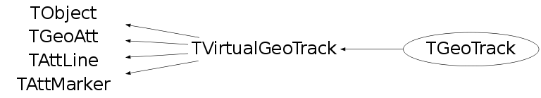

class TGeoTrack: public TVirtualGeoTrack
TGeoTrack - Class for user-defined tracks attached to a geometry. Tracks are 3D objects made of points and they store a pointer to a TParticle. The geometry manager holds a list of all tracks that will be deleted on destruction of gGeoManager.
Function Members (Methods)
public:
protected:
| TGeoTrack(const TGeoTrack&) | |
| virtual void | TObject::DoError(int level, const char* location, const char* fmt, va_list va) const |
| void | TObject::MakeZombie() |
| TGeoTrack& | operator=(const TGeoTrack&) |
Data Members
public:
| enum EGeoParticleActions { | kGeoPDefault | |
| kGeoPOnelevel | ||
| kGeoPAllDaughters | ||
| kGeoPType | ||
| kGeoPDrawn | ||
| }; | ||
| enum TObject::EStatusBits { | kCanDelete | |
| kMustCleanup | ||
| kObjInCanvas | ||
| kIsReferenced | ||
| kHasUUID | ||
| kCannotPick | ||
| kNoContextMenu | ||
| kInvalidObject | ||
| }; | ||
| enum TObject::[unnamed] { | kIsOnHeap | |
| kNotDeleted | ||
| kZombie | ||
| kBitMask | ||
| kSingleKey | ||
| kOverwrite | ||
| kWriteDelete | ||
| }; | ||
| enum TGeoAtt::[unnamed] { | kBitMask | |
| }; | ||
| enum TGeoAtt::EGeoVisibilityAtt { | kVisOverride | |
| kVisNone | ||
| kVisThis | ||
| kVisDaughters | ||
| kVisOneLevel | ||
| kVisStreamed | ||
| kVisTouched | ||
| kVisOnScreen | ||
| kVisContainers | ||
| kVisOnly | ||
| kVisBranch | ||
| kVisRaytrace | ||
| }; | ||
| enum TGeoAtt::EGeoActivityAtt { | kActOverride | |
| kActNone | ||
| kActThis | ||
| kActDaughters | ||
| }; | ||
| enum TGeoAtt::EGeoOptimizationAtt { | kUseBoundingBox | |
| kUseVoxels | ||
| kUseGsord | ||
| }; | ||
| enum TGeoAtt::EGeoSavePrimitiveAtt { | kSavePrimitiveAtt | |
| kSaveNodesAtt | ||
| }; |
protected:
| UInt_t | TGeoAtt::fGeoAtt | option flags |
| Int_t | TVirtualGeoTrack::fId | track id |
| Color_t | TAttLine::fLineColor | line color |
| Style_t | TAttLine::fLineStyle | line style |
| Width_t | TAttLine::fLineWidth | line width |
| Color_t | TAttMarker::fMarkerColor | Marker color index |
| Size_t | TAttMarker::fMarkerSize | Marker size |
| Style_t | TAttMarker::fMarkerStyle | Marker style |
| Int_t | TVirtualGeoTrack::fPDG | track pdg code |
| TVirtualGeoTrack* | TVirtualGeoTrack::fParent | id of parent |
| TObject* | TVirtualGeoTrack::fParticle | particle for this track |
| TObjArray* | TVirtualGeoTrack::fTracks | daughter tracks |
Class Charts
{kind=link}
{kind=link}
{kind=link}
{kind=link}

Function documentation
TGeoTrack(Int_t id, Int_t pdgcode, TVirtualGeoTrack* parent = 0, TObject* particle = 0)
Constructor.
TVirtualGeoTrack * AddDaughter(Int_t id, Int_t pdgcode, TObject* particle = 0)
Add a daughter track to this.
void AnimateTrack(Double_t tmin = 0, Double_t tmax = 5E-8, Double_t nframes = 200, Option_t* option = "/*")
Draw animation of this track
void Draw(Option_t* option = "")
Draw this track overimposed on a geometry, according to option. Options (case sensitive): default : track without daughters /D : track and first level descendents only /* : track and all descendents /Ntype : descendents of this track with particle name matching input type. Options can appear only once but can be combined : e.g. Draw("/D /Npion-") Time range for visible track segments can be set via TGeoManager::SetTminTmax()
Int_t GetPoint(Int_t i, Double_t& x, Double_t& y, Double_t& z, Double_t& t) const
Get coordinates for point I on the track.
const Double_t * GetPoint(Int_t i) const
Return the pointer to the array of points starting with index I.
Int_t GetPoint(Double_t tof, Double_t* point, Int_t istart = 0) const
Return the index of point on track having closest TOF smaller than the input value. Output POINT is filled with the interpolated value.
void PaintMarker(Double_t* point, Option_t* option = "")
Paint current point of the track as marker.
Int_t Size(Int_t& imin, Int_t& imax)
Return the number of points within the time interval specified by TGeoManager class and the corresponding indices.
Int_t SearchPoint(Double_t time, Int_t istart = 0) const
Search index of track point having the closest time tag smaller than TIME. Optional start index can be provided.
void SetBits(Bool_t is_default = kTRUE, Bool_t is_onelevel = kFALSE, Bool_t is_all = kFALSE, Bool_t is_type = kFALSE)
Set drawing bits for this track